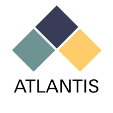

الرؤية تعكس الأهداف بعيدة المدى والطموحات التي تسعى الشركة لتحقيقها، مثل:
الابتكار التقني: أن تصبح الشركة رائدة في تطوير حلول برمجية مبتكرة تسهم في تحسين حياة الأفراد والأعمال.
التوسع العالمي: أن تكون مزودًا عالميًا موثوقًا لحلول البرمجيات.
الاستدامة: تطوير تقنيات تُحدث تأثيرًا إيجابيًا على المجتمع والبيئة.
الريادة في التحول الرقمي: دعم الشركات والمؤسسات في عملية التحول الرقمي من خلال تقديم حلول ذكية.
مثال على رؤية:
"أن نكون الشركة الرائدة عالميًا في تطوير البرمجيات التي تُحدث تحولًا رقميًا شاملاً في جميع القطاعات."
الرسالة (Mission):
الرسالة تركز على الأهداف العملية قصيرة ومتوسطة المدى والخدمات التي تقدمها الشركة لتحقيق رؤيتها. أمثلة على الرسائل:
حلول مخصصة: تقديم حلول برمجية مصممة خصيصًا لتلبية احتياجات العملاء.
جودة وابتكار: بناء منتجات برمجية ذات جودة عالية باستخدام أحدث التقنيات.
تمكين العملاء: مساعدة العملاء على تحقيق أهدافهم من خلال أدوات رقمية متطورة.
التعليم والتطوير: دعم المجتمعات بتوفير تدريب في التكنولوجيا الحديثة.
مثال على رسالة:
"نلتزم بتطوير برمجيات ذات جودة عالية ومبتكرة لتحسين كفاءة الأعمال وتحقيق التحول الرقمي بأسلوب بسيط وسلس."
أمثلة واقعية لرؤية ورسالة شركات برمجية شهيرة:
Google:
الرؤية: "تنظيم معلومات العالم وجعلها مفيدة ومتاحة عالميًا."
الرسالة: "تقديم أفضل خدمة بحث إلكترونية وتوفير أدوات للناس للوصول إلى المعلومات بسهولة."
Microsoft:
الرؤية: "تمكين كل فرد وكل مؤسسة على هذا الكوكب من تحقيق المزيد."
الرسالة: "توفير حلول تقنية تساعد الأفراد والشركات على الابتكار والإنتاجية."
Apple:
الرؤية: "تقديم أفضل تجربة للمستخدم من خلال الابتكار في البرمجيات والأجهزة والخدمات."
الرسالة: "نصمم منتجات تُثري حياة الناس وتجعلها أفضل."